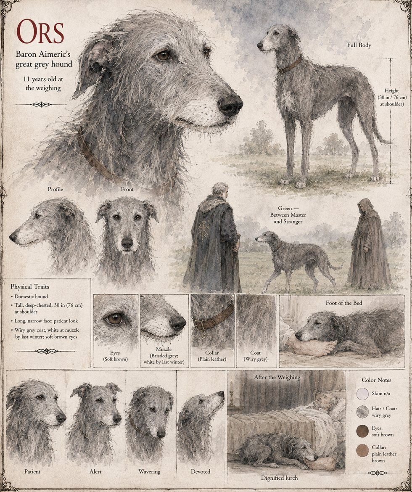

Ors
Baron Aimeric's great grey hound · eleven years at the baron's bedside
A great grey hound who has slept at the foot of Baron Aimeric's bed for eleven years, and who has never in that time left his master's side without permission. He trots at the baron's stirrup down the lane of Vilarnau on the twentieth of Jorren, with twenty men-at-arms, two masons and the bailiff. When the baron walks across the green to tell the stranger to stand aside, the hound pads forward, stops, and thrusts his long nose into the stranger's open palm, and is, after a moment's hesitation, scratched behind the ear.
“Ors,” says Aimeric. The hound looks at him; it takes a perceptible moment; then he returns, unhurried, to the baron's knee, and sits. It is the sort of thing a man cannot do anything about, and the baron will think of it at odd moments for the rest of his life. The hound is across his knees when the letter comes saying that Guilhem is dead. By the third winter his muzzle is white; he lies across the bed in the last week with his chin on his master's foot, and does not once ask for an account of anything. The manuscript says nothing of what became of him after the baron died. His age at the weighing, thirty inches at the shoulder and the wiry grey coat are the sheet's; the text says only that he is a great grey hound and has been with Aimeric for eleven years.